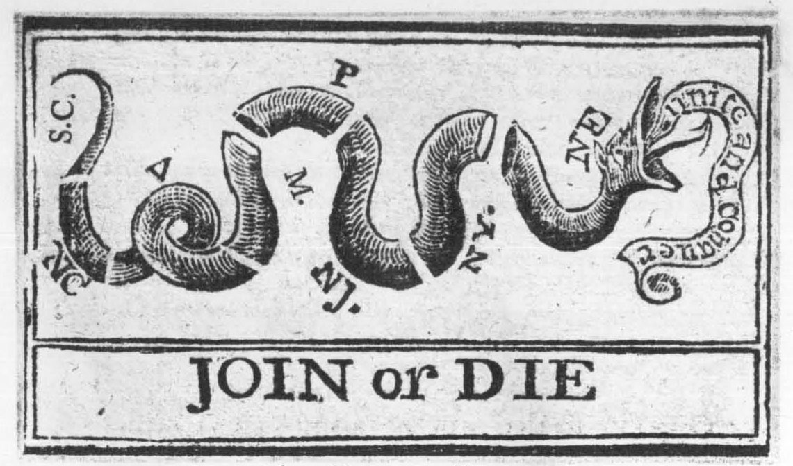

Political Cartoon
Rhetorical Analysis
Exploring Benjamin Franklin's Join, or Die through Ethos, Pathos, Logos, Kairos, and the Rhetorical Situation.
01. Political Cartoon Information
Title: Join, or Die
Cartoonist: Benjamin Franklin
Date: May 9, 1754
Publication: The Pennsylvania Gazette

Benjamin Franklin, Join, or Die (1754)
Visual Description
The cartoon shows a snake cut into eight separate pieces, with each piece labeled with the initials of different American colonies or groups of colonies. Underneath the snake are the bold words "JOIN, or DIE." The snake represents the colonies being divided instead of working together. The black-and-white design is simple but sends a powerful message. By showing the snake separated into pieces, Benjamin Franklin suggests that the colonies are weaker when divided and need to unite to survive.
02. Ethos — Credibility
How does the cartoon establish credibility and authority?
Benjamin Franklin uses ethos through his reputation as a respected writer, printer, and political thinker. His involvement in colonial affairs helped give his message credibility. Publishing the cartoon in The Pennsylvania Gazette also allowed him to reach readers who were familiar with his work. Franklin's knowledge of the political situation made his warning about colonial unity more convincing.
03. Pathos — Emotion
How does the cartoon appeal to the audience's emotions?
The cartoon uses pathos by creating fear and urgency. The words "Join, or Die" make the situation seem serious and suggest that the colonies could face dangerous consequences if they remain divided. The image of the snake cut into pieces also creates a sense of weakness and vulnerability. Franklin wanted the colonists to feel concerned about their future and recognize the importance of working together.
04. Logos — Logic
What logical argument does the cartoon communicate?
Franklin uses logos by presenting a simple argument that unity creates strength. The snake represents the colonies, and its separated pieces symbolize how weak they are when acting independently. The reasoning is that if the colonies cooperate, they will have a better chance of defending themselves against outside threats. The cartoon uses a clear cause-and-effect message to show why cooperation is necessary.
05. Kairos — Timing
Why was this message important when it was published?
The cartoon was published in 1754, during growing conflict between Britain and France in North America. The colonies were facing threats connected to the French and Indian War, making cooperation especially important. Franklin released the cartoon at a time when colonial leaders were discussing ways to unite and improve their defenses. This timing made his message more relevant because the colonies had a reason to consider working together.
06. Rhetorical Situation
Speaker — Who created the message?
Benjamin Franklin created the Join, or Die political cartoon, which was published in The Pennsylvania Gazette in 1754.
Audience — Who is the cartoon meant for?
The cartoon was aimed at American colonists, especially those in the British colonies who needed to work together.
Purpose — What does the cartoonist want to accomplish?
Franklin wanted to encourage the colonies to unite instead of remaining divided. He believed cooperation would make them stronger against outside threats.
Context — What issue or event inspired it?
The cartoon was published in 1754 during growing tensions between Britain and France in North America, around the beginning of the French and Indian War. Franklin was promoting colonial unity through the Albany Plan of Union.
Central Message — What is the cartoon arguing?
The cartoon argues that the colonies must work together to survive. The separated snake represents the divided colonies, while the words "Join, or Die" warn about the dangers of remaining separated.
07. Overall Analysis
I think the cartoon is persuasive because it delivers a strong message using a simple image and very few words. The snake being separated into pieces shows how weak the colonies are when they are divided.
The strongest rhetorical appeal is pathos because the words "Join, or Die" create fear and urgency. This makes the audience feel that unity is necessary for survival. The cartoon also uses kairos because it was published at a time when the colonies faced growing threats from France.
Overall, Franklin effectively uses symbolism and emotion to convince the colonies that they are stronger together.
08. Source & Historical Background
Benjamin Franklin published Join, or Die in 1754. The cartoon encouraged greater unity among the British colonies during growing conflict with France in North America.
The Library of Congress provides additional historical background about Franklin, colonial politics, and the importance of unity during this period.
View Cartoon & Historical Background